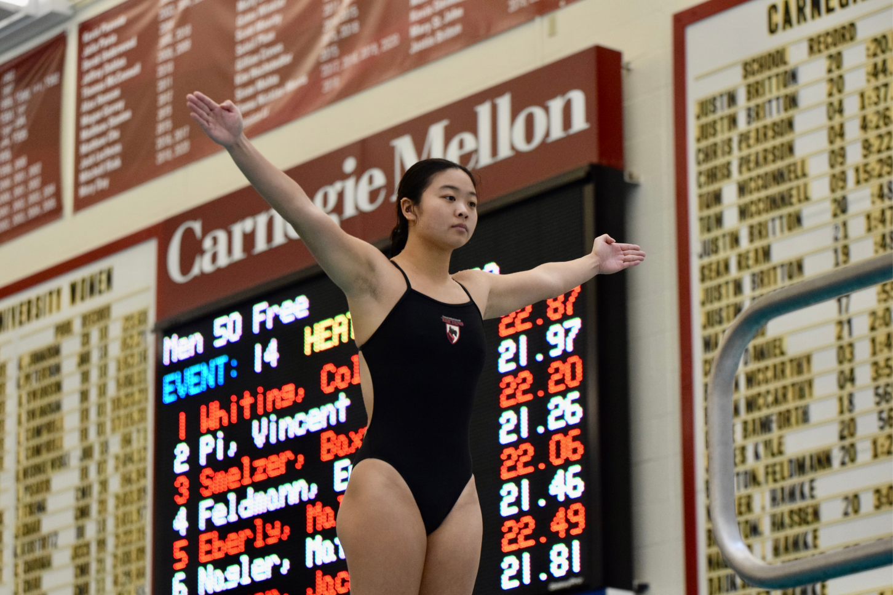
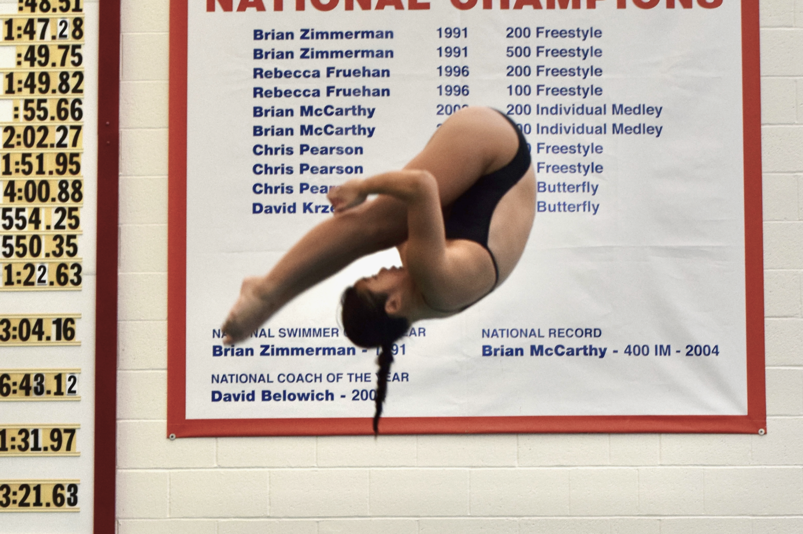
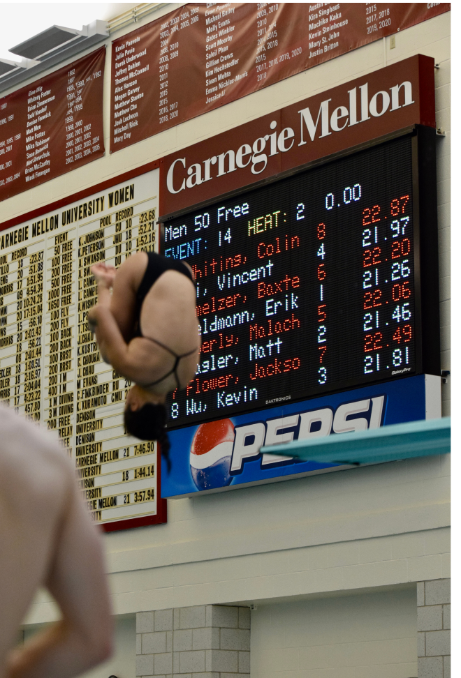
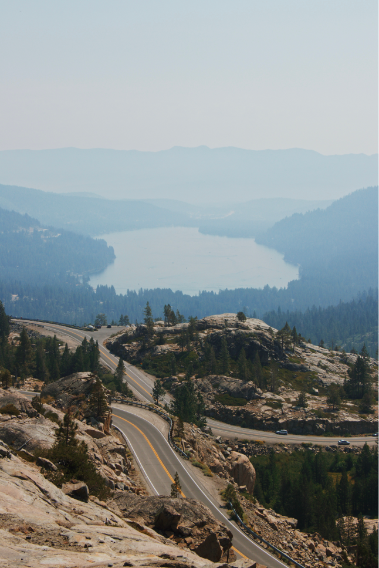
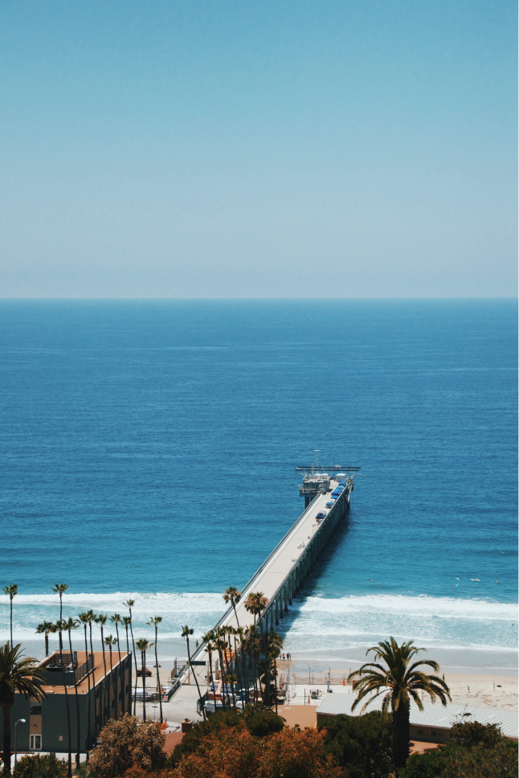
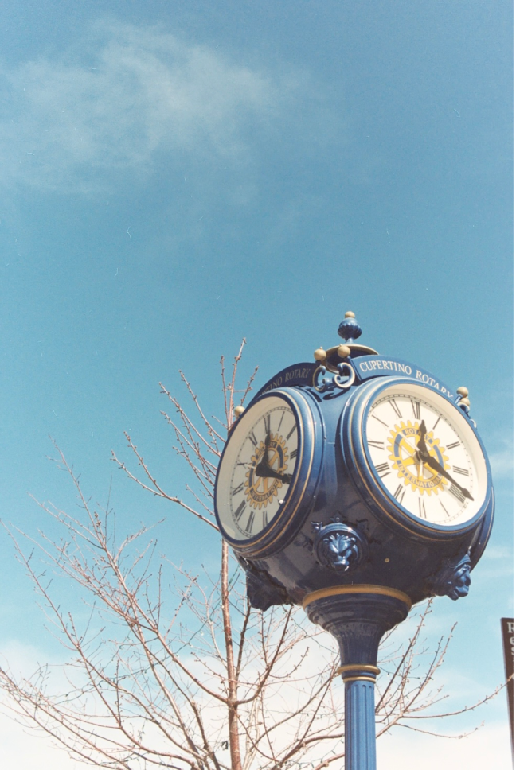
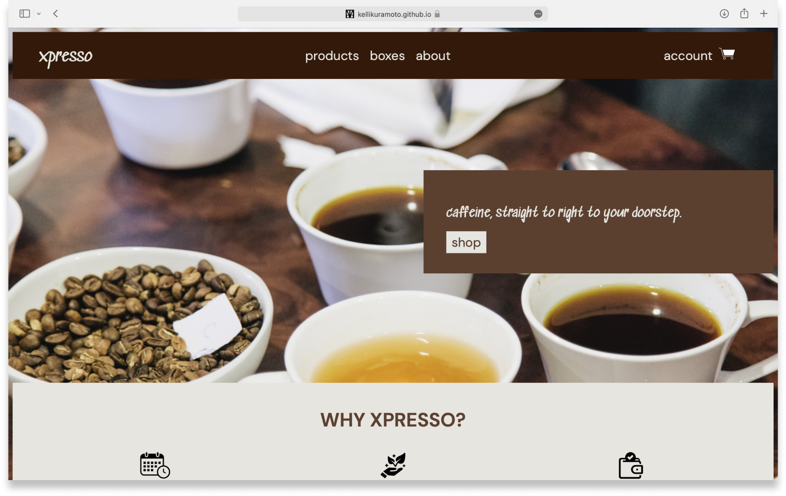
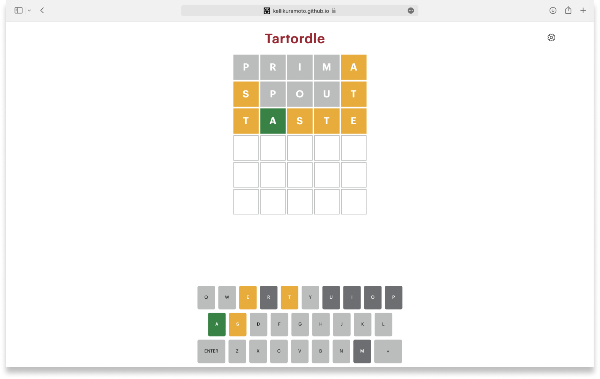

Play
otaku: extreme level of enthusiasm for a topic or activity
Springboard diving
I am on Carnegie Mellon’s varsity Swimming and Diving team. I currently hold the school records for both 1M and 3M springboard diving.
My favorite thing about diving is the teammates and bonds that I have forged during my time at CMU.
My favorite thing about diving is the teammates and bonds that I have forged during my time at CMU.



Photography
I shoot both film and digital photography. I have been practicing photography since my 7th grade elective class: Photography 1.
My favorite types of photography are landscape and portrait. Medium is equally loved!
My favorite types of photography are landscape and portrait. Medium is equally loved!



Software engineering
Along with UX design, I also enjoy software development specifically Front end, as well as playing around with some databases.
I believe my interdisciplinary studies at Carnegie Mellon have equipped me to become a better designer as a whole.
I believe my interdisciplinary studies at Carnegie Mellon have equipped me to become a better designer as a whole.

